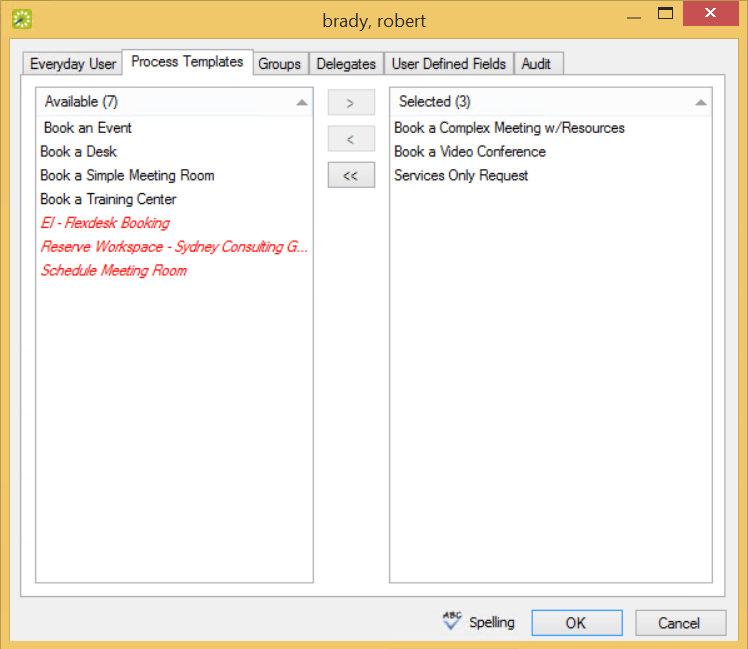

This section guides you in assigning Everyday User process templates to a single user. To assign these templates to multiple Everyday users in a single step, see Assigning Web Templates to Multiple Everyday Users.
This section guides you in assigning Everyday User process templates to a single user. To assign these templates to multiple Everyday users in a single step, see Assigning Web Templates to Multiple Everyday Users.
|
|
1. On the {{product}} menu bar, click Configuration > Everyday Applications > Everyday Users. The Everyday Users window opens.

2. In the Find field (in the upper portion of the screen), search for the user to whom you wish to assign Everyday User process templates by entering at least the first three characters of their user name or email.

|
Tip:You can further narrow your search results by
|
3. Click Display.
4. Select the user and click the Edit button on the right.
5. In the Everyday User editing window, click the Process Templates tab.

6. To assign process templates to an Everyday User, move them to the right side using the arrow button. Your selections here will present to the user in {{product_webapp}} as available booking options under "My Templates."
7. Click OK. The Everyday Users dialog box closes and returns you to the Everyday Users window.